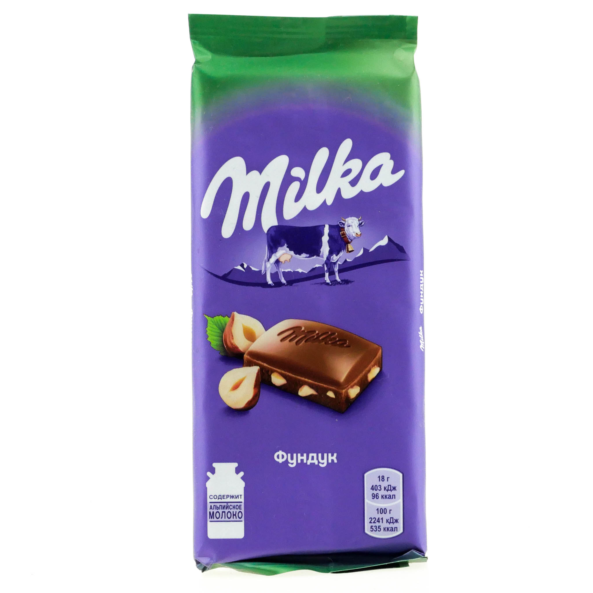

Шоколaдки к чаю
10 МЕСТО

Milka — бренд шоколада, принадлежащий компании Mondelēz International. Основное производство уже более ста лет находится в Лёррахе (Германия); остальные производства располагаются в нескольких странах Евросоюза (Австрия, Болгария, Венгрия, Польша, Румыния, Чехия.)
Название Milka было образовано из двух немецких слов — Milch (молоко) и Kakao (какао), по названиям главных ингредиентов. Под маркой Milka также выпускают шоколадное печенье, конфеты и другие кондитерские изделия[1][2].
Свои собственные версии шоколада Milka выпускаются в России и на Украине